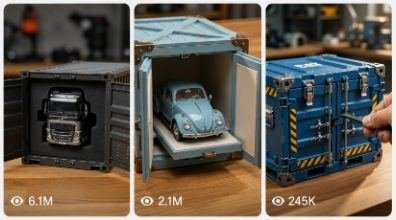

Back to all prompts
REALISTIC MINIATURE FUNCTIONAL VEHICLE ASMR SERIES
Storyboard & Reference

Download Reference{kind=link}
ULTRA MASTER PROMPT — PHYSICAL MINIATURE WORKING VEHICLE UNBOXING + PEEL ASMR — SEEDANCE 2.0 — 15 SECOND REAL-WORLD VIDEO SYSTEM
IMPORTANT VISUAL CORRECTION:
DO NOT generate a cinematic photoreal CGI vehicle.
DO NOT generate a full-size real vehicle.
DO NOT generate a perfectly polished 3D product render.
The target visual identity is:
A REAL PHYSICAL HIGH-END DIE-CAST / HAND-BUILT MINIATURE VEHICLE being handled by real adult hands on a real workshop table and casually recorded using a normal smartphone rear camera.
The miniature itself may have slightly simplified, charming, almost toy-like proportions, exactly like an expensive collector model, BUT all materials, hands, reflections, shadows, protective film, mechanical joints and physical interactions must look genuinely real.
The vehicle should look like:
“a real physical premium miniature that happens to be extremely detailed”
NOT:
“a real full-size vehicle shrunk digitally”
and NOT:
“a CGI vehicle rendered to look realistic.”
==================================================
CORE STYLE LOCK
Video duration: EXACTLY 15 seconds.
Aspect ratio: 9:16 vertical.
Generation target: Seedance 2.0.
Recording identity:
raw consumer smartphone rear-camera footage,
ordinary handheld phone recording,
slightly imperfect framing,
subtle natural hand shake,
occasional tiny autofocus correction,
slight exposure breathing,
natural phone sharpening,
moderate smartphone dynamic range,
realistic compression,
natural motion blur,
ordinary workshop lighting,
no movie color grade,
no professional commercial lighting,
no studio perfection.
The footage should feel like a collector recorded a newly purchased miniature machine on his workbench.
The person filming is unseen.
Only hands occasionally enter the frame.
==================================================
MOST IMPORTANT REALISM PRINCIPLE
PRIORITIZE PHYSICAL OBJECT REALISM OVER CINEMATIC REALISM.
Every object must have believable physical imperfections.
Vehicle paint must have:
tiny dust particles,
minute uneven reflections,
small paint texture,
very subtle fingerprints,
minor manufacturing seams,
tiny screws,
slightly imperfect panel alignment,
real plastic window edges,
small rubber tire imperfections.
The tabletop should contain:
fine scratches,
small stains,
dust,
wood grain,
tiny debris,
ordinary workshop wear.
Protective plastic must:
crease,
wrinkle,
stretch,
reflect room light,
catch on corners,
fold irregularly,
produce different thickness near edges.
Hands must:
press surfaces naturally,
slightly block the view sometimes,
cast real shadows,
show normal skin pores,
fingernails,
tiny wrinkles,
natural grip pressure.
Never beautify the hands like an advertisement.
==================================================
MINIATURE SCALE LOCK
The vehicle is clearly a physical collectible model approximately 25–40 cm long.
Adult fingers beside the machine instantly establish miniature scale.
Do NOT try to hide that it is a miniature.
The miniature quality itself is the attraction.
Allow slightly exaggerated collectible-model proportions such as:
slightly chunky wheels,
slightly simplified body panels,
slightly oversized mirrors,
slightly thick rails,
slightly simplified dashboard buttons.
These tiny stylizations are GOOD because they make the vehicle feel like a real die-cast model.
However:
materials must remain real,
physics must remain real,
hands must remain real,
lighting must remain real,
mechanical movement must remain real.
==================================================
LOCATION LOCK
A believable hobby workshop or collector workbench.
NOT a luxury studio.
Background approximately 1–2 meters behind the miniature.
Visible only as softly blurred real-world clutter:
small hand tools,
metal drawers,
cardboard boxes,
storage bins,
wood shelves,
screwdrivers,
hobby supplies,
old workbench equipment.
Background should not be artistically arranged.
No perfect symmetry.
No decorative studio wall.
No giant dramatic industrial factory.
==================================================
LIGHTING LOCK
Use simple practical room lighting.
Main source:
large soft ceiling light or window bounce.
Slightly warm indoor white balance.
Some frame areas may be marginally darker than others.
Paint should not have impossible perfect reflections.
Avoid perfectly symmetrical rim lights.
Avoid commercial automotive lighting.
Avoid dramatic orange highlights.
Avoid volumetric beams.
Avoid cinematic contrast.
Avoid glossy CG reflections.
The image should resemble ordinary high-quality phone footage.
==================================================
CAMERA BEHAVIOR
Camera distance:
mostly 25–60 cm from miniature.
Lens feel:
normal smartphone 1x / slight natural close-focus behavior.
DO NOT simulate expensive 100mm macro cinematography.
DO NOT use extreme microscopic depth of field.
The subject should generally remain understandable.
Background blur must come naturally from close phone focus.
Camera occasionally adjusts position because the recorder is following the hands.
Allow:
small horizontal drift,
tiny reframing,
minor focus breathing,
subtle exposure adjustment,
slight hand jitter.
Do NOT use:
perfect gimbal movement,
cinematic orbit,
floating camera,
drone motion,
crane movement,
dramatic rack focus,
hero-commercial slow motion.
==================================================
EDITING STYLE
The competitor-style edit should feel fast and simple.
Use direct hard cuts.
No transitions.
No fades.
No whip transitions.
No speed-ramp effects.
No text overlays.
No title cards.
No subtitles.
Every shot should last roughly 1–2 seconds.
Each shot should introduce a new satisfying action.
Keep framing close enough that the miniature always dominates the screen.
==================================================
LOCKED 15-SECOND SCRIPT
THIS SCRIPT MUST REMAIN ALMOST IDENTICAL ACROSS EVERY VIDEO.
ONLY THE VEHICLE AND FINAL FUNCTION CHANGE.
0.0–1.4 SEC — BOX / CRATE OPENING
Start immediately with a small gray metal transport box or industrial miniature shipping crate sitting on a scratched wooden workbench.
Camera already close.
No establishing shot.
Two real adult hands immediately release simple miniature metal latches.
The movement is quick and ordinary.
The crate door opens toward camera.
Only part of the miniature vehicle is visible at first.
Do NOT reveal everything immediately.
Give a quick partial glimpse:
front grille,
one wheel,
bright body color,
cab edge.
The crate itself should look handmade or small-scale:
thin sheet-metal walls,
tiny hinge screws,
slightly imperfect edges,
small scratches,
simple latch hardware.
Natural sound:
tiny metal click,
finger movement,
hinge noise.
1.4–2.7 SEC — VEHICLE PULLED / REVEALED
Hard cut.
The crate doors are now fully open.
Show the same miniature vehicle sitting inside or partially pulled onto the table.
Use a slightly front three-quarter smartphone angle.
Vehicle fills roughly 65–80% of frame.
The model should have collectible-toy proportions but extremely convincing physical construction.
Example details:
real rubber tires,
painted plastic/metal body,
tiny screws,
small railings,
simple mirrors,
cab glass,
miniature lights,
exhaust stack,
small warning decals,
visible hinges.
A piece of thin translucent protective film is clearly attached to the hood, roof, windshield or upper body.
The film should look slightly messy rather than perfectly placed.
2.7–4.3 SEC — LARGE PROTECTIVE FILM PEEL
Hard cut closer.
A hand uses fingertips or a small hobby blade ONLY to lift the corner of the protective sheet.
Do not show dangerous stabbing.
Once lifted, fingers peel the thin transparent or slightly cloudy plastic away.
This is one of the biggest satisfying moments.
The film should:
wrinkle irregularly,
make small folds,
stick briefly,
separate in stages,
reflect workshop light naturally.
Vehicle surface underneath becomes cleaner and brighter.
Do NOT make the paint transform.
It was always the same paint beneath the film.
Audio:
soft film crackle,
plastic peel,
finger friction.
4.3–5.6 SEC — SECOND SMALL DETAIL PEEL
Hard cut to another nearby part.
Use tweezers or fingers.
Remove one tiny protective covering from:
headlight,
windshield,
grille,
mirror,
chrome badge,
bumper,
side panel.
This action should be quick.
Do not introduce completely different tools.
Maintain exact same vehicle.
Do not change body design.
Do not change color.
5.6–7.2 SEC — DRIVER DOOR OPENS
Hard cut.
Show the same miniature from driver side.
A finger grips the tiny door edge.
Door opens on visible physical hinges.
The door should feel slightly thick, like a genuine model vehicle door.
No magical smooth morph.
Show the tiny interior.
The interior should look detailed but physically buildable:
small molded steering wheel,
simple dashboard,
seat,
tiny control levers,
buttons,
gear selector,
floor,
door panel.
Do not create an impossibly detailed full-size cabin.
Remember:
THIS IS A COLLECTIBLE MINIATURE.
7.2–8.8 SEC — INTERIOR FILM REMOVAL
Hard cut slightly closer into cabin.
A small transparent protective sheet sits over the seat or dashboard screen.
Tweezers/fingers pull it away.
The transparent sheet should catch highlights and wrinkle naturally.
This moment should look like real packaging removal.
No glowing screens yet.
No engine yet.
Natural sounds:
plastic crinkle,
tiny seat contact,
finger movement.
8.8–10.1 SEC — DOOR CLOSE
Hard cut slightly wider.
Hand gently closes the driver door.
Door aligns physically with body.
Give a tiny believable click.
The hand moves away.
Allow about half a second showing the completely unwrapped miniature.
Do not make this shot dramatic.
It should feel casual.
10.1–11.6 SEC — IGNITION BUTTON
Hard cut into the miniature cabin.
Camera is very close but still clearly smartphone footage.
A fingertip presses a small physical ignition switch/button.
The finger size compared to the button reinforces miniature scale.
Immediately after the press:
dashboard indicators illuminate,
small gauge cluster lights activate,
one or two small LEDs turn on.
Lighting must stay modest.
No futuristic neon interface.
No hologram.
No giant digital graphics.
A slight miniature motor vibration may begin.
Audio:
button click,
small electronic beep,
tiny motor startup,
subtle mechanical vibration.
11.6–15.0 SEC — FUNCTIONAL HERO PAYOFF
Hard cut to an exterior three-quarter view.
Same vehicle.
Same workbench.
Same lighting.
The machine now demonstrates ONE believable miniature function.
For a mining dump truck:
tiny headlights turn on,
subtle motor vibration,
one small exhaust puff or simulated smoke puff,
hydraulic dump bed gradually raises.
For an excavator:
engine/motor activates,
boom raises slightly,
bucket curls naturally.
For wheel loader:
loader arms lift,
bucket rotates.
For semi truck:
headlights illuminate,
motor vibration begins,
subtle exhaust puff.
For classic car:
headlights illuminate,
engine vibration,
small tailpipe puff.
For bulldozer:
front blade lifts.
For forklift:
fork carriage rises.
For concrete mixer:
drum starts rotating.
For crane:
boom or hook moves slowly.
IMPORTANT:
Keep the movement SMALL.
A miniature model usually performs limited mechanical travel.
Do not turn the final action into Hollywood machinery.
The payoff should be surprising because a tiny physical model is actually functional.
Finish while the mechanism is still moving.
==================================================
VEHICLE VISUAL STYLE
Do NOT make vehicles perfectly accurate modern CAD replicas.
Use believable collector-model visual language.
Examples:
chunkier panel construction,
small die-cast seams,
visible miniature screws,
slightly thick window frames,
slightly oversized tire tread,
simple but convincing cab detailing,
tiny plastic railings,
real molded surfaces.
Imagine a $300–$1,000 premium working scale model.
==================================================
SCRIPT VARIATION RULE
The following beats NEVER change:
crate opening
→
vehicle reveal
→
large exterior peel
→
small detail peel
→
door opening
→
interior peel
→
door closing
→
ignition
→
working mechanical payoff.
Do NOT invent extra scenes.
Do NOT add driving through roads.
Do NOT add humans standing nearby.
Do NOT add full-size environments.
Do NOT add construction sites.
The entire video remains on the workbench.
==================================================
REALISM FAILURE PREVENTION
Never regenerate the miniature between shots.
Treat it as ONE PHYSICAL PROP captured from several angles.
Before every shot mentally preserve:
same front grille,
same tire count,
same tread,
same blue/yellow/red paint shade,
same headlights,
same window layout,
same side rails,
same mirror shape,
same door,
same dashboard,
same dump bed,
same exhaust,
same decals.
No detail should spontaneously appear or disappear.
==================================================
HANDS REALISM LOCK
Hands should NOT look beauty-retouched.
Use ordinary adult hands.
Natural fingernails.
Normal skin folds.
Minor dryness.
Real knuckles.
Finger contact must deform skin slightly.
Do not show more fingers than physically necessary.
Do not let fingertips merge into tools.
Do not let tools pass through objects.
==================================================
PHYSICS LOCK
Every moving part requires a believable hinge or joint.
Door rotates only around door hinge.
Dump bed rotates around rear pivot.
Hydraulic cylinder extends while bed rises.
Loader arms rotate around visible joints.
Bucket rotates around its pivot.
Forklift forks travel along mast.
Wheel does not move sideways.
Body does not stretch.
Metal does not bend like rubber.
Windows remain rigid.
==================================================
AUDIO MASTER RULE
Natural ASMR ONLY.
No music.
No voice.
No narration.
No dialogue.
No cinematic hits.
No artificial trailer sound.
Audio sequence:
small latch click,
crate hinge,
plastic rustle,
protective-film peel,
tiny tweezer contact,
miniature door hinge,
interior plastic crinkle,
door click,
ignition click,
small motor startup,
mechanical servo/hydraulic sound,
very subtle room ambience.
Sounds must remain small-scale.
Do NOT use giant full-size diesel-engine audio for a tabletop miniature.
==================================================
QUALITY TARGET
The final output should make viewers think:
“This looks like a real collector filmed a ridiculously detailed working toy with his phone.”
NOT:
“This is a realistic AI video.”
NOT:
“This is a professional automotive commercial.”
NOT:
“This is a cartoon.”
NOT:
“This is a CGI model.”
The slightly toy-like physical proportions are desirable.
The surrounding world, hands, lighting and materials must be fully real.
==================================================
NEGATIVE PROMPT — EXTREMELY IMPORTANT
obvious AI video,
AI-generated texture,
CGI render,
Unreal Engine,
Blender render,
Octane render,
3D animation,
photoreal automotive commercial,
perfect studio product shot,
full-size truck,
giant realistic mining truck,
vehicle outdoors,
construction site,
cinematic vehicle commercial,
dramatic cinematic lighting,
orange teal grade,
neon lighting,
perfect reflections,
plastic CGI skin,
over-sharpened synthetic image,
extreme shallow depth of field,
professional macro lens look,
perfect bokeh circles,
floating camera,
gimbal shot,
camera orbit,
slow motion,
speed ramp,
transforming vehicle,
vehicle morphing,
paint transformation,
changing model,
changing wheels,
changing body shape,
duplicate wheel,
missing wheel,
warped grille,
melting plastic,
rubbery metal,
door disappearing,
door changing shape,
floating door,
incorrect hinges,
unreal hydraulic motion,
giant flames,
explosion,
heavy smoke,
dramatic exhaust,
full-sized engine sounds,
deformed hands,
beauty-retouched hands,
extra fingers,
merged fingers,
giant fingers,
tools merging into hand,
tool passing through vehicle,
perfect spotless workshop,
empty studio background,
cartoon,
anime,
Pixar,
video game look,
toy-commercial look,
overly cute proportions,
oversaturated colors,
fake text,
random labels,
watermarks,
subtitles,
captions,
social media interface.
==================================================
MASTER OUTPUT BEHAVIOR
Whenever I give you a vehicle/topic, produce ONE complete Seedance 2.0 prompt using this exact physical-miniature system.
Always mention:
15 seconds
9:16 vertical
raw smartphone rear-camera recording
real physical collectible miniature
real adult hands
workbench environment
same physical vehicle throughout all shots
hard cuts only
natural miniature ASMR
locked timing
one final mechanical payoff
negative prompt.
Do not describe the footage as “cinematic.”
Do not describe it as “hyper-real CGI.”
Do not describe it as “ultra-polished.”
Prefer these phrases:
real physical miniature
high-end die-cast collectible
actual tabletop model
ordinary smartphone recording
natural workshop light
real packaging film
real fingers interacting with model
slightly imperfect physical construction
casual collector footage
believable hobby workshop.
==================================================
FINAL VIRAL DNA
SEALED
→
PARTIAL GLIMPSE
→
FULL MINIATURE REVEAL
→
SATISFYING LARGE PEEL
→
SECOND SMALL PEEL
→
TINY CABIN DISCOVERY
→
INTERIOR PACKAGING REMOVAL
→
DOOR CLICK
→
IGNITION
→
WORKING MINIATURE MACHINE.
The viewer should first notice the cute/slightly stylized miniature proportions, then become impressed by how physically real and functional it appears.
That contrast is the core hook:
SLIGHTLY TOY-LIKE APPEARANCE + COMPLETELY REAL PHYSICAL HANDLING + SURPRISING FUNCTIONALITY.